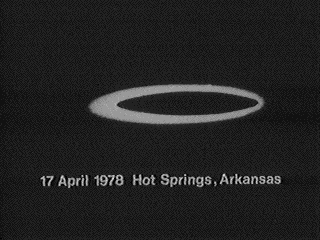

Observation du 17

A Terreneuve, dans l'île de Bell, face à
la ville côtière de Anglee, 3 violentes explosions retentissent au-dessus de la maison de Jim Bickford. Le
téléphone est arraché du mur, la télévision implose, de fortes surtensions se manifestent et 3 trous de 50 cm
apparaissent dans la neige.
Photographie (ci-contre) à Hot Springs
(Arkansas).
Près de Dulce (Comté
de Rio Arriba, Nouveau-Mexique), Manuel Gomez, le même rancher qui en avait été "victime" en
, trouve un veau de 11 mois mort, ses organes sexuels et son rectum manquants. On
voit du sang rose issu du museau (qui selon l'enquêteur n'aurait pas coagulé au bout de plusieurs jours). La peau
parait fragile au toucher, comme du " papier pelure " (sic). La ceinture pelvienne est aussi enlevée, et des
meurtrissures autour du secteur du poitrail font penser certains qu'une courroie a peut-être servi à soulever et
transporter le corps. A 100 pieds au nord de la dépouille, on trouve des "empreintes" rondes de 10 cm de diamètre
(identiques à celles découvertes dans un autre cas du , enregistré au même ranch) et d'autres
derrière elle. Les mêmes affirment que l'appareil devait être très lourd car le terrain était sec et les traces de
pneu de la voiture de police étaient à peine visibles. Ces empreintes étaient nanties d'éraflures dans le sol,
probablement faites durant un déplacement de l'appareil. Pourtant la seule entrée du pâturage se trouve sur le côté
de la cour de la maison du propriétaire. Aucun véhicule n'a été vu ni entendu entrant dans le pâturage. L'officier
de la Police d'Etat du Nouveau-Mexique chargé de l'enquête, Daniel P. Sanchez (Gabe
Valdez?), accompagné de l'inspecteur du bétail Aparicio Gurule, retire le foie qui est tout blanc et était
comme de la bouillieThompson 1978a. Des traces semblables à celles trouvées dans
le cas de sont également rapportées. L'officier enquêteur indique : Je suis troublé comme
jamais. Que ce soit humain ou quelque chose d'autre, ils découpent cet animal et ce n'était pas une vache ou un
cheval ou un prédateur qui a laissé ces traces. Aucun charognard n'aurait jamais touché la carcasse Thompson 1978a. L'incident est aussi accompagné de signalements de lumières étranges vues
dans les environs de Dulce au moment où la mutilation aurait eu lieu : Comme dans de nombreux autres cas de
mutilation, il y eut un rapport non-officiel d'un officier du Department des Jeux et Pêche d'une grande lumière
orange dans l'obscurité le long d'une crête directement au sud de la prairie Thompson 1978a. Vers 3 h du matin le même jour, M. José Martinez, beau-frère du
propriétaire présent à la ferme, a entendu un appareil aérien volant à basse altitude au-dessus du secteur où
l'animal fut trouvé. Afin de déterminer la cause de la mort, le muscle du cœur et d'autres parties du taureau sont
envoyées aux Laboratoires Scientifiques de Los Alamos pour analyse. Les résultats du test n'auraient pas été
concluants à cause d'une contamination possible [de l'échantillon] par des sources extérieures. Le foie sera
coupé en 3 morceaux qui seront envoyés à 3 laboratoires privés différents L'enquêteur affirmera cependant que les recherches sur les mutilations de
bétail sont entravées par l'incapacité de trouver
des laboratoires faisant des tests et des rapports nantis de constatations
précises.. Par contraste avec un foie "sain" envoyé également, celui du taureau ne contenait pas de
cuivre, mais 4 fois plus de phosphore, zinc et potassium Sider, J.: (calcium et
magnésium ?) Albuquerque Journal < Rommel, K. M., Jr.: "1978 Incidents" in "A Popular History of Livestock Mutilations in New Mexico,
Winter 1975 - Spring 1979", Operation Animal Mutilation, Report of the district attorney, 1st judicial district, état du Nouveau-Mexique, juin 1980.
L'enquêteur concluera que la bête a été larguée d'une certaine hauteur en chute libre par un appareil aérien non
identifié, mais aussi que ces animaux mutilés seraient "marqués" quelques temps avant d'être mutilés. Il pense aussi
que les bêtes sont capturées par un appareil aérien, mutilées ailleurs, puis ramenées et jetées au sol sans
précaution, ce qui explique les marques de meurtrissures et les bris d'os notés dans certains cas.
Aux Baux-de-Provence (Bouches-du-Rhône), un automobiliste
observe 3 points lumineux clignotants de couleur rouge à 100 m du sol. Ne distinguant au départ aucune forme précise
d'où ces lumières pourraient provenir, le témoin constate que celles-ci se déplacent lentement d'est en ouest. Un
léger bourdonnement est entendu par le témoin. Durant l'observation, 1 des points lumineux descend plus près du sol
et l'inspecte avec ce qui semble être un projecteur. Les 2 autres points lumineux restent stationnaires. Le témoin
peut alors voir une coupole éclairée de différentes couleurs. La presse locale fera état d'autres témoignages sur ce
phénomène qui reste inexpliqué GEPAN : PAN classé D.
Aux Baux-de-Provence (Bouches-du-Rhône, Provence Alpes Cote d'azur),
un automobiliste observe 3 points lumineux clignotants de couleur rouge à 100 m du sol. Ne distinguant au départ
aucune forme précise d'où ces lumières pourraient provenir, le témoin constate que celles-ci se déplacent lentement
d'est en ouest. Un léger bourdonnement est entendu par le témoin. Durant l'observation, un des points lumineux
descendra plus prés du sol et l'inspectera avec ce qui semble être un projecteur. Les 2 autres points lumineux
resteront stationnaires. Le témoin pourra alors voir une coupole éclairée de différentes couleurs La Presse locale fera état d'autres témoignages sur ce phénomène qui reste inexpliquéGEPAN: PAN classé D.
A Caen (Calvados), en déplacement dans la région de
Verdun, un automobiliste et ses passagers aperçoivent 1 lueur blanche dans le ciel qui les intrigue. 1 phénomène
lumineux triangulaire de grandes dimensions et de couleur rouge-orangé apparaît alors, immobile dans le ciel.
Arrêtant leur véhicule, aucun bruit ne sera entendu durant l'observation. 1 lumière blanche se dirige ensuite en
direction des témoins effrayés qui reprennent leur véhicule et poursuivent leur chemin GEPAN : PAN classé C.
M. et MmeGuilbaud quittent Pissotte (petit village au nord de Fontenay-le-Comte, VendéeIl doit ce charmant nom au passage de Louis XVI, qui fit arrêter là son cocher afin "que ses Dames pissottent...")
pour se rendre chez un ami avant de rejoindre un bal de mariage quand soudain M. Guilbaud aperçoit 1 forme énorme un peu au-dessus de la route (à 2 m aux dires de M.
Guilbaud) et à quelques dizaines de mètres seulement de distance. M. Guilbaud avise alors sa femme qui somnole et décide d'arrêter son véhicule pour mieux
observer le phénomène extraordinaire qui se déroule devant eux. Le phénomène se présente sous la forme d'un
demi-cercle aux contours un peu flous, de couleur très rouge au centre puis se dégradant jusqu'à l'orange sur
les bords du demi-disque. La dimension précisée par les témoins est de 10 à 15 m à la base et 5 m de hauteur.
L'observation qui va durer quelques mn, durant lesquelles les témoins se rendent compte que l'objet lance des
flashes toutes les 20 s, entraînant l'apparition et la disparition de l'objet d'une manière tout à fait
spontanée. L'environnement immédiat de l'objet tout en étant noir ne laisse pas apparaître les étoiles
(précision de MmeGuilbaud). Après avoir stagné, le phénomène va alors
se mettre en mouvement, s'élève de quelques m et dirige son parcours d'est en ouest. Mme Guilbaud,
devant l'importance du phénomène, prend peur, réussit à convaincre son mari de faire demi-tour. Ceux-ci prennent
alors la route de Fontenay pour se rendre au mariage et surprise, ils retrouvent l'objet qui va les "suivre"
jusqu'à Longèves. Arrivés alors sur les lieux du mariage, leur 1er geste est d'avertir les personnes
présentes et c'est ainsi qu'une quinzaine de personnes vont être alors témoins du phénomène à leur tour, durant
quelques minutes. Tous les témoins contactés ont confirmé la forme de l'objet décrite par les témoins majeurs.
Quand aux dimensions, les avis divergent et ne sont plus en rapport avec ceux établis par les premiers témoins
qui l'ont, eux, observé à quelques m et en donnent de ce fait la dimension réelle. Il est à noter que les
témoins secondaires ont été interrogés par la Gendarmerie Nationale, qui a bien voulu ensuite donner des
renseignements sur le compte-rendu de son enquête, d'ou il ressort une certaine incohérence dans certains
témoignages, mais les grandes tendances restent identiques, quant à la durée d'observation par les témoins
secondaires, elle a été estimée à 1 ou 2 mn, l'objet prenant alors de la vitesse, se dirigeant toujours d'est en
ouest, puis disparaissant définitivement.... Siclon, Joël: LDLN n° 181.
A Saint Sauveur (Yonne, Bourgogne), plusieurs témoins
voient le passage de 3 boules de feu, qui disparaissent derrière la ligne d'horizon en émettant une clarté rouge.
Aucun bruit n'a été entendu. Aucune trace au sol dans le secteur considéré n'a été retrouvée GEPAN: PAN classé C.